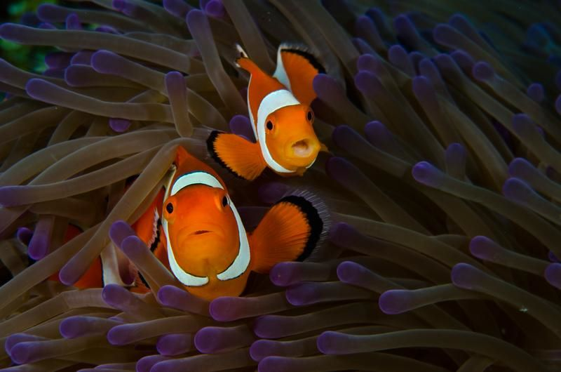
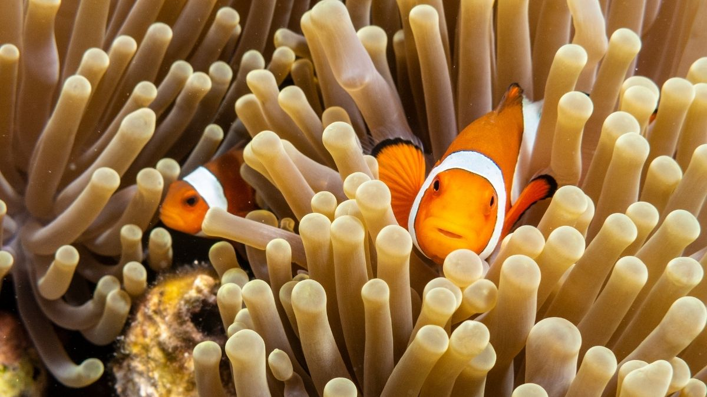
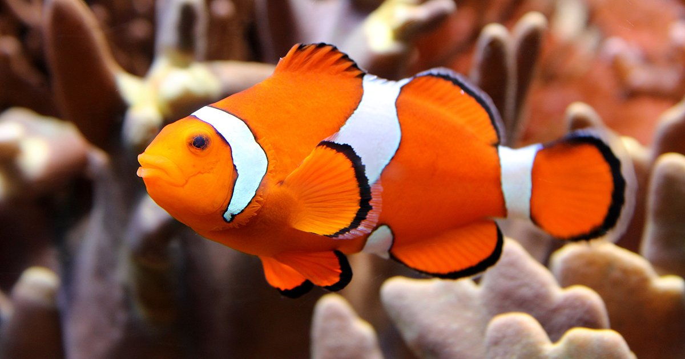
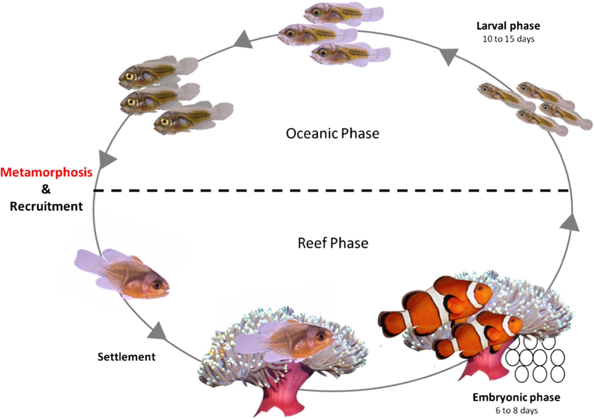
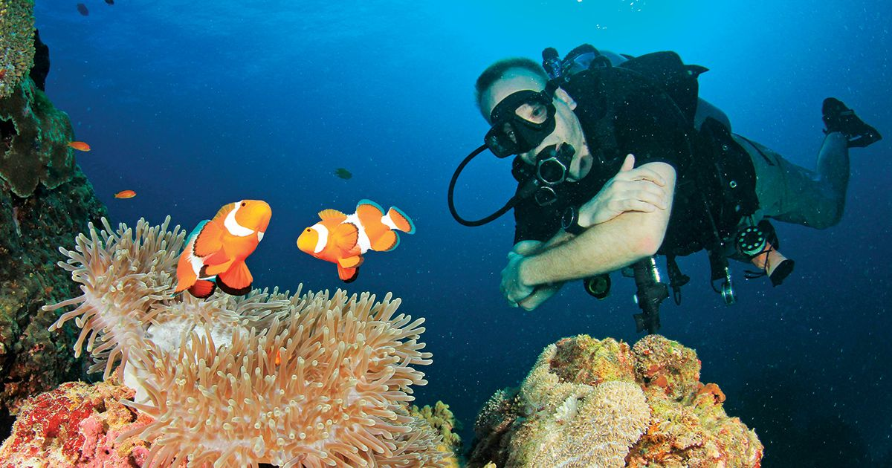

j
Introduction
Clownfish are a group of marine fish that belong to the family Pomacentridae, which also includes damselfish. They are known for their striking colors and unique behaviors, such as forming symbiotic relationships with sea anemones. In this detailed research, we will cover the physical characteristics, behavior, habitat, diet, reproduction, and conservation status of clownfish. Clownfish are a fascinating group of marine fish that have captured the attention of many due to their striking colors, unique behaviors, and cultural significance. They have been popularized in movies such as "Finding Nemo" and have become a highly sought-after species in the aquarium trade. However, these small fish play an important role in the ecosystem as they form symbiotic relationships with sea anemones, which provides them with protection and shelter from predators. They are also an indicator species for the health of coral reefs, as they are highly dependent on this habitat for their survival. Despite their popularity, many species of clownfish are facing threats such as overfishing and habitat destruction, which highlights the need for conservation efforts to protect these unique and important fish.
Physical characteristics
 Clownfish are small fish, typically growing to about 3-5 inches in length, with a maximum recorded size of 7 inches.
They have a rounded body shape and are characterized by their bright colors, which can vary depending on the species.
For example, the Ocellaris clownfish, which is the most commonly kept species in aquariums, has orange and white stripes,
while the Percula clownfish, made famous by the movie "Finding Nemo," has orange and black stripes.
Clownfish also have a unique feature called the "mucus coat," which protects them from the stinging cells of the anemone.
Clownfish are small fish, typically growing to about 3-5 inches in length, with a maximum recorded size of 7 inches.
They have a rounded body shape and are characterized by their bright colors, which can vary depending on the species.
For example, the Ocellaris clownfish, which is the most commonly kept species in aquariums, has orange and white stripes,
while the Percula clownfish, made famous by the movie "Finding Nemo," has orange and black stripes.
Clownfish also have a unique feature called the "mucus coat," which protects them from the stinging cells of the anemone.
Behaviour
Clownfish are known for their symbiotic relationship with sea anemones, which provides them with protection from predators. The anemone, in turn, benefits from the clownfish's presence, as it helps to lure in prey. The clownfish are able to live among the anemone's stinging tentacles without being harmed because of the mucus coat they produce. Clownfish are also known for their aggressive behavior, particularly when defending their territory.
Habitat
Clownfish are found in the tropical waters of the Indian and Pacific Oceans, from the Red Sea to Australia and Japan. They are typically found in shallow waters, close to coral reefs and sea anemones.
Diet
Clownfish are omnivorous, feeding on a variety of small organisms such as plankton, algae, and small crustaceans. They are also known to scavenge for food, eating dead or decaying matter.
Reproduction
Clownfish are sequential hermaphrodites, meaning that they are born as males and can later change sex to become females. The largest and most dominant fish in a group will typically become the female, while the smaller and less dominant fish remain males. Clownfish form monogamous pairs and lay their eggs on a flat surface close to their anemone home. The male clownfish will guard and aerate the eggs until they hatch, which typically takes between 6-10 days.
Conservation Status
Several species of clownfish are listed as threatened or endangered due to overfishing for the aquarsium trade and habitat destruction caused by human activity, including coral bleaching. The International Union for Conservation of Nature (IUCN) lists the Orange clownfish (Amphiprion percula) as "vulnerable," while the Maroon clownfish (Premnas biaculeatus) is listed as "near threatened." Efforts are underway to protect clownfish populations through conservation measures such as marine protected areas and sustainable harvesting practices.